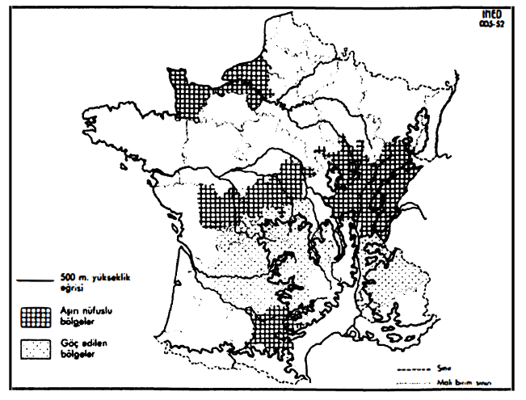

Dünya nüfusu bugün (1979'da) (% 10 yaklaşık olarak), aşağı yukarı 4 milyar civarındadır. Biraz önce verdiğimiz çok yaklaşık rakamlarla kıyaslanacak olursa, bu kitle kendimizi 1300'e veya 1800'e yerleştirmemize göre, bu eski insanlıkların 5 ilâ 12 katını temsil etmektedir. Bu 1-2, 1-5 katsayıları ve ara değerleri her şeyi açıklayacak altın sayılar değillerdir. Üstelik bunlar asla aynı cinsten gerçeklikleri de karşılaştırmamaktadırlar: bugünün insan topluluğunun, 1300 veya 1350'nin insanlığının 12 katı olduğu, yalnızca biyolojik bakış açısından bile doğru değildir, çünkü yaş piramitleri birbirlerinin aynı değildir. Ancak, kaba rakamların kıyaslanması, tek başına bazı bakış açılarını ortaya çıkartabilmektedir.
Böylece, bizim ölçülerimize göre, biz tarihçilerin XIX. yüzyıl öncesine, geriye doğru yaptığımız yolculukta karşımıza çıkanlar küçük kentler, aynı zamanda küçük ordulardır da: bunların her ikisi de bir avuca sığmaktadır.
XV. yüzyılda Almanya'nın en büyük kenti olan Kolonya (bugünkü Köln),55 biri nehrin yukarısında, diğeri aşağısında olmak üzere, Ren üzerindeki en büyük iki nehir taşımacılığı hattıyla, büyük kara yollarının kesişme noktasında yer alan Kolonya, Almanya'da kırsal ile kentsel nüfus oranının onda bir olduğu ve kentsel basıncın, bize ne kadar alçak görünürse görünsün, çoktan netleştiği bir dönemde, ancak 20.000 kişilik bir nüfusa sahipti. Bu durumda 20.000 kişilik bir grubun her türlü oran mahfuz olmak üzere, bugünün 100.000 ilâ 200.000 kişilik bir yerleşim yerinden daha önemli bir insan, güç, yetenek, beslenecek boğaz yoğunlaşması olduğunu kabul edelim. Kolonya'nın özgün ve canlı kültürünün XV. yüzyılda ne anlama gelmiş olduğunu düşünün. Aynı şekilde en azından 400.000 ve herhalde 700.000 kişilik bir nüfusun atfedilmesi gereken XVI. yüzyılın İstanbul'undan söz ederken, bunun her şey eşit olmak üzere, bugünün en büyük kentsel yerleşimleriyle kıyaslanabilecek kentsel bir canavar olduğunu söyleme hakkımız vardır. Yaşayabilmesi için bu kente, Balkanların alınabilecek tüm koyun sürüleri, Mısır'ın bakla, pirinç ve buğdayı, Karadeniz’in buğday ve odunu, Küçük Asya'nın sığır, deve ve atları ve nüfusunu yenileyebilmesi için imparatorluğun tümündeki müsait durumdaki insanlar ile, üstüne üstlük Tatarların Rusya'daki akınlarından, Türk donanmasının Akdeniz kıyılarından -bunların hepsi başkentin göbeğindeki bedestende satışa çıkarılmaktadır- elde ettikleri köleler gerekmekteydi.
Aynı şekilde, XVI. yüzyılın başında İtalya egemenliği için çarpışan paralı asker ordularının da çok küçük ölçekli olduklarını, 10.000 veya 20.000 asker ile 10 veya 20 toptan meydana geldiklerini söyleyelim. Bir Pescaro, bir Ahırlar Nazırı de Bourbon, bir de Lannoy, bir Philibert de Châlon gibi prestijli komutanlarıyla bir Alman paralı askerleri, bizim okul kitaplarımızda yer alan ve bir 1. François, bir Bonnivet veya bir Lautrec komutasındaki şu diğer paralı asker ordularını canlarının istediği gibi pataklarken, Alman süvarileri 10.000, İspanyol çakmaklı tüfekçileri de 10.000 kişiydiler. Gerçekte 10.000 seçkin asker, ama bunlar tıpkı daha sonradan Napoleon'un askerlerinin Boulogne harekâtı ile İspanya savaşı (1803-188) arasında erimeleri gibi, çabucak erimektedirler. Bu küçük paralı asker orduları La Bicoque (1522) çarpışmasından, Lautrec'in Napoli'deki başarısızlığına kadar (1528) sahnede kalmışlar; Pavia savaşı (1525) onların zirvesi olmuştur. Öte yandan, bu çevik, zora alışkın ve acımasız (bunlar Roma yağmasının hüzünlü kahramanlarıdır) 10.000 adam, bugünün 50.000 veya 100.000 kişisinden çok daha fazladır. Bu eski dönemlerde daha kalabalık olsalardı, onları ne hareket ettirme, çok yağlı bir ülke hâriç ne de iaşe etme konusunda ne yapılacağı bilinebilirdi. Böylece, Pavia zaferi çakmaklı tüfekçilerin, bundan da fazlası, boş miğdelerin başarısıdır. I. François'nın ordusu, çarpışmanın 24 Şubat 1525'te beklenmedik bir şekilde cereyan edeceği, kuşatma altında ı uttuğu Pavia kentinin surlarıyla, dükün duvarlarla çevrili tahsisli av parkı arasında (yani çok küçük bir mekân) kendini düşman toplarından koruyan sığınağında fazlasıyla iyi beslenmektedir.
Aynı şekilde, İngiliz iç savaşının dramı içinde krallık ordusunun ilk bozgunu olan, korkunç ve belirleyici Long Marston Moo çarpışması (2 Temmuz 1644) ancak sınırlı güçleri sahneye çıkartmıştır: 15.000 kralcı, 27.000 parlamentocu. Parlamento ordusunun tümü, Peter Laslett'in işaret ettiği üzere “Queen Mary ve Queen Elizabeth vapurlarına sığabilirdi”; ve Laslett şu sonuca varmaktadır: “insan cemaatlerinin minik hacmi... şu kaybettiğimiz dünyanın karakteristik bir olgusudur?
Bunlar söylendikten sonra, bazı cesurane serüvenler, işe başlarken bize kendilerini küçümsetecek rakamların ötesinde, değerlerine yeniden kavuşmaktadırlar. Sevilla, Cadiz (daha sonra Lizbon), Malaga, Barselona gibi düzenleme istasyonlarından hareketle, Avrupa'nın denizleri ve karaları boyunca kadırga, filo ve tercios sevk eden İspanyol destek hizmetlerindeki tekrarlanan cesaret gösterileridir; İslamiyet ile hıristiyanlığı, yani ince kadırgalar üzerinde olduğu kadar, onlara refakat eden yuvarlak teknelerdede yer alan her iki düşman donanmadaki insanları, toplam olarak en azından 100.000 kişiyi karşı karşıya getiren İnebahtı savaşı da (7 Ekim 1571) cesurane bir serüvendir. Yüzbin kişi! Bugün 500.000 veya 1 milyon kişi taşıyabilen bir filoyu düşünelim? İnebahtı'dan elli yıl kadar sonra, 1630'a doğru Wallenstein 100.000 askeri komutası altında toplamayı başarmıştır, bu olağanüstü bir iaşe hizmetinin örgütlenmesini gerektiren, çok daha büyük bir serüvendir, bir rekordur. Denain çarpışmasında (1712) zafer kazanacak olan Villars'ın ordusu 70.000 kişiden meydana gelmiştir, ama bu umutsuzluk ve son şans ordusudur. Daha sonra, örneğin 1744'te, Savaş Komiseri Dupre d'Aulnay'nin dediğine göre, 100.000 asker sayısı olağan hale gelmişe benzemektedir, en azından teorik olarak. Dupre d'Aulnay, her dört günde bir, bu sayıda insan için, erzak parkından yapılacak bir dağıtım düşünmek gerekmektedir diye açıklamaktadır; yani günde 120.000 tayın (çünkü çift tayınlar da vardır) olmak üzere, dört günde bir 480.000 tayınlık kitlesel bir dağıtım; araba başına 800 tayın olmak üzere, “yalnızca 600 araba ve dörder koşulmuş 2.400 at gerekmektedir” diye sonuca varmaktadır. Bütün bunlar basit işler haline gelmiştir, tayın ekmeğini pişirmek üzere tekerlekli demir fırınlar bile vardır. Fakat XVII. yüzyılın başında, topları olan bir ordunun çeşitli ihtiyaçlarını sayıp döken bir topçuluk inceleme kitabı, 20.000 asker rakamını seçmekteydi.
Bu örnekler, sayılamayacak kadar çok durum hakkında kolaylıkla tekrarlanabilecek bir delillendirmeyi resmetmektedirler. Moriscoların ülke dışına atılmalarıyla (1609-1614) (oldukça güvenilir hesaplara göre en azından 300.000 kişi) İspanya'da meydana gelen; Nantes fermanıyla Fransa'da ortaya çıkan; Yeni Dünya'ya yönelik zenci köle ticaretiyle Kara Afrika’da beliren, gene İspanya'da gene aynı Yeni Dünya'nın beyaz adamlarla iskânından ötürü ortaya çıkan (XVI. yüzyılda bu yönde yola çıkan yılda belki bin kişi, toplam 100.000 kişi) kayıplar -bütün bu rakamların nisbi düşüklüğü bütünsel bir sorunu ortaya koymaktadır. Bunun böyle olmasının nedeni, siyasal kilitlenmişliği, ekonomisinin esnek olmamasından ötürü Avrupa’nın daha fazla insan safrası atmaya mecalinin olmadığındandır. Avrupa, Afrika olmasaydı Yeni Dünya'yı değerlendiremezdi. Bunun bin tane nedeni vardır ve özellikle de iklim başta gelmektedir, ama aynı zamanda Avrupa’nın işgücünün çok fazla miktarda kısmından vazgeçememesi de rol oynamıştır. O çağda yaşayanlar, hiç kuşkusuz kolaylıkla abartmaktadırlar, ama Sevilla hayatı güçten etkilenmiştir, öylesine ki Andrea Navagero bu konuda 1526'da şöyle demiştir: “o kadar çok insan Hindlere gitti ki, (Sevilla) kenti daha az nüfuslu ve âdeta kadınların eline geçmiş hale geldi...”
K. J. Beloch, XVII. yüzyılda, tümü için aralarında boğuşan üç büyük güce bölünmüş olan Avrupa'nın gerçek ağırlığını tartmaya uğraşırken, aynı düşüncelere sahip olmuştur. Bu üç güç Osmanlı İmparatorluğu, İspanyol İmparatorluğu ve XIII. Louis ile Richelieu'nün Fransa'sıdır. Bunların Eski Dünya'da sahip oldukları insan kitlesini hesaplarken -her biri için yaklaşık olarak 17 milyon kişi-, bunun ancak üstüne çıkıldığında büyük göç rolüne soyunmanın mümkün olduğu düzey olduğu sonucuna varmıştır. Bugün bunun uzağındayız.
Yolumuzda ilerlerken, birçok başka karşılaştırma, hepsi de önemli açıklamaları ortaya çıkartacaktır. 1600'e doğru dünya nüfusunun bugünkünün sekizde biri olduğunu, Fransa nüfusunun (bugünkü siyasal mekânı içinde hesaplanmış olarak) da, tamamen kesin değilse bile, muhtemel olduğu üzere 20 milyon olduğunu varsayalım. O sıralar İngiltere en fazla beş milyon nüfusa sahiptir. Eğer her iki ülke de dünya ritminde büyüseydi, İngiltere bugün 40 milyon, Fransa 160 milyon nüfusa sahip olurdu; bu bir bakıma hızlı bir şekilde, Fransa'nın (veya İtalya, hatta XVI. yüzyıl Almanya'sı) daha o sıralar aşırı nüfuslu bir ülke olduğunu söylemenin bir şeklidir. Fransa o dönemlerdeki olanaklarına nazaran insanlar, savaşlar, gereksiz boğazlar, istenmeyenler tarafından istila edilmiştir. Brantöme daha o sıralar, Fransa'nın “bir yumurta gibi dolu” olduğunu söylemektedir. Yukarı tarafından arzulanan bir politikanın yokluğundan ötürü, göçler olabildiğince el yordamıyla örgütlenmektedirler; örneğin XVI. ve XVII. yüzyıllarda belli bir yoğunlukta İspanya'ya; daha sonra Amerika “adalarına” doğru olanlarında veya “1540’ta (Protestanlara karşı) ilk sistematik takibatın ortaya çıkmasıyla başlayan ve ancak 1752-1753'te, Languedoc’tâki kanlı bastırmaların sonuncu büyük dalgacıyla sona eren, Fransa'nın şu uzun kanaması” nedeniyle dinsel sürgünlerin rastlantısı içinde olduğu gibi.

1745 FRANSA'SINDA AŞIRI NÜFUSLU BÖLGELER VE GÖÇ ALANLARI
Tarihsel araştırma, daha düne kadar meçhul olan İberya ülkelerine yönelik Fransız göçünün çapını göstermektedir. Bu göçün genişliği, seyyahların ona ilişkin notları ile olduğu kadar, istatistik dökümler tarafından da kanıtlanmıştır. Kardinal de Retz 1654'te, çok sayıda Fransız zenaatkârın bulunduğu Zaragossa'da, herkesin onun dilini konuştuğunu duymaktan büyük bir şaşkınlığa düştüğünü söylemektedir. On yıl sonra bu kez, Madrid'deki muazzam gavachos (Fransızlara halk arasında verilen ad) sayısından şaşkınlığa düşme sırası Antoine de Brunel'dedir; bunların “İspanyol kılığı altında saklandıklarını ve Fransız olduklarını gizlemek ve onlar gibi sopa yemekten kurtulmak üzere Walon ve Franche-Compteli veya Lorraineli olduklarını iddia eden” 40.000 kişi olduklarını tahmin etmektedir.
İspanyol başkentine zanaatkârlarını, zahmetli işlerde çalışanlarını, perakendecilerini bunlar sağlamakta ve buraya yüksek ücretler ile kârlar tarafından cezbedilerek gelmektedirler. Özellikle duvarcıların ve inşaat işçilerinin durumu böyledir. Ama aynı zamanda, kırların istilası da söz konusudur: Fransa'dan gelen köylüler olmasaydı, İspanyol toprakları çoğu zaman islenmeden kalırdı. Bu ayrıntılar, miktarı bol, sürekli ve toplumsal olarak karışık bir göçü işaret etmektedirler. Bu da Fransız nüfusunun aşırı fazla olduğunun bir işaretidir. Gourville Sire'i olan Jean Herauld Anılar'ında İspanya'da (1669) 200.000 Fransız olduğunu söylemektedir. Bu rakam muazzamdır, ama inanılmaz değildir.
Demek ki, doğumların iradi olarak kısıtlanması, işte böylece yüzyıllardan beri sayının bu kamçı darbelerine maruz kalan bu ülkede XVII. yüzyılda ortaya çıkmakta, daha doğrusu yerleşmektedir. Sebastien Mercier'nin (1771) yazdığı üzere, “bizzat kocalar, taşınmaları esnasında evden bir çocuğu uzaklaştırmaya gayret ediyorlardı.” 1789'dan sonra Devrim'in kritik villan esnasında ortaya çıkan doğum oranlarındaki vurgulu bir düşüş, doğumu önleme uygulamalarındaki yayılmayı net bir şekilde açığa çıkartmaktadır. Fransa'da her yerden daha erken olan bu tepkinin, acaba bu aşikâr aşırı nüfuslu geçmişe yerleştirilmesi gerekmekte değil midir?
Suların üzerinde kalan dünya yüzeyi 150 milyon km2 olduğuna göre, dünyanın bugün 4 milyarlık nüfusuyla, ortalama yoğunluğu km2'ye 26,7 kişidir. 1300 ile 1800 arasına ilişkin olarak aynı hesap yapıldığında, en alt rakam olarak 2,3/km2 ve en yüksek rakam olarak da 6,6/km2 elde edilecektir. Daha sonra, 1978'de en fazla nüfuslu (km2'ye 2100 ve daha fazlası) bölgelerin bugünkü yüzeylerini hesapladığımızı varsayalım, böylece bugünün yoğun uygarlıklarının esas yüzeyini -hesap birçok kereler yapılmakta, yeniden yapılmaktadır-, yani 11 milyon km2'yi elde etmiş oluruz. İnsanların % 70'i (aşağı yukarı 3 milyar kişi) bu dar serin üzerinde yoğunlaşmaktadır; Saint-Exupery bunu kendi tarzında söylemiştir, evler ve çeşmeler evreni dünya yüzeyi üzerinde dar bir şeritten ibarettir; ilk hata, uçağı Paraguay kırlarında kayboluyordu; ikinci hata, Sahra kumlarının üzerine iniyordu. Bu imgeler üzerinde, meskûn dünyanın, cekoument'nin simetrik olmaması, saçmalığı üzerinde durmayalım. İnsan dünyanın onda dokuzunu zor karşısında, ama aynı zamanda ihmalden ve nihayetsiz çabalar zinciri olan tarihin başka türlü karar vermiş olmasından ötürü boş bırakmaktadır. Vidal de la Blache “insanlar yeryüzüne bir zeytinağ lekesi biçiminde yayılmamışlar, mercanlar gibi ilkel bir şekilde yığılmışlardır” demektedir: yani “bazı insan iskânı taban noktalarının” üzerinde “birbirlerini izleyen” tabakalar halinde yığılmışlardır. Eskinin yoğunlukları zayıf olduklarından, ilk bakışta 1400 ilâ 1800 yılları arasında uygarlık yapacak düzeyde, gerçekten yoğun insan topluluklarının olmadığı sonucuna varma eğilimine kapılmak mümkündür. O tarihlerde de fiili olarak aynı ayırım, dünyayı ağır ve dar alanlarla, insan bakımından zayıf geniş ve boş alanlar halinde bölen aynı asimetri vardır. Burada da rakamları kendi skalalarına yerleştirmek gerekmektedir.
Böylece, 1500'lere doğru, Avrupa fethinin Amerika üzerindeki etkisinin arefesinde, uygarlıkların, gelişmiş kültürlerin, ilkel kültürlerin dünyanın tümü üzerindeki, hemen hemen kesin yerlerini bilmekteyiz. Çağa ait belgeler, sonraki tarihlerde yazılan anlatılar, etnografların dünkü ve bugünkü araştırmaları bize geçerli bir harita sağlamaktadırlar, çünkü bilindiği üzere, kültürel sınırlar çağlar boyunca çok az değişmektedirler. İnsan tercihan, kuşaklar boyunca eski başarılarının tuzağına düşmüş olan kendi deneylerinin çerçevesi içinde yaşamaktadır. İnsan, yani ait olduğu grup: bireyler onu terk etmekte, başkaları ona katılmakta, ama grup belirli bir mekâna, bildik topraklara bağlı olmayı sürdürmektedir. Burada kök salmıştır.
Dünyanın 1500'lere doğru olan ve Gordon W. Hewes gibi bir etnograf tarafından çıkartılmış olan ve bizim burada iktibas ettiğimiz harita kendiliğinden konuşmaktadır. Bu harita 76 uygarlık ve kültürü belirtmektedir, yani dünyanın sular üstünde kalan 150 milyon km2'lik toprağını aralarında paylaşan 76 küçük ve farklı biçim ve yüzey örneği. Bu harita büyük öneme sahip olduğundan ve ona sık sık başvurmak gerektiğinden, işin başında ona dikkatli bakalım. Bu 76 yapboz parçası, Tasmanya'ya ait olan 1no'lu örnekten, 76. ve sonuncusu olan Japonya'nınkine kadar bir sınıflandırmanın taslağını vermektedir. Sınıflandırma yukarıdan aşağıya doğru, zorluk olmadan okunmaktadır: 1°) 1 numaradan 27 numaraya kadar toplayıcı, avcı, ilkel halklar; 2°) 28 numaradan 44 numaraya kadar göçebeler ve hayvan yetiştiricileri; 3°) 45 numaradan 63 numaraya kadar hâlâ açık vermekte olan ve dünyanın etrafında oldukça ilginç bir şekilde, bir kemer biçiminde dağılmış olan, çapayla tarım yapan köylüleri içeren tarımcı halklar; 4°) nihayet 64 numaradan 76 numaraya kadar uygarlıkları, çok sayıda araç ve üstünlüğe sahip olan, nisbeten yoğun olan şu toplulukları sıralamıştır: bu toplumların olanakları evcil hayvanlar, sabanlar, pulluklar, arabalar ve özellikle kentler olmaktadır. “Gelişmiş” ülkelerin, insanların ağır evreninin, yapbozun bu sonuncu 13 parçasından meydana geldiğinin üzerinde durmanın yararı yoktur.
Zaten bu zirve yerlerine ilişkin sınıflandırma, bir veya iki yer için tartışmalıdır. 61 e 62 numaralar, yani Aztek veya Meksika uygarlığı ile İnka ve Peru uygarlığını bu yüksekliğe tam yetkili olarak yerleştirmek gerekir miydi? Evet tabii ki nitelikleri, parlaklıkları, sanatları, özgün zihniyetleri söz konusudur; evet eski Mayaların hesap harikaları söz konusudur; bu uygarlıkların uzunlukları düşünülecek olursa gene evet: Bunlar beyazların fethinin korkunç darbesinden sonra da varlıklarını sürdürmüşlerdir. Buna karşılık, yalnızca çukur açan sopaları saban gibi kullandıkları; lama, alpaga ve vikunya hariç hiçbir evcil hayvanlarının olmadığı; tekerlek, çatı, araba, mü- tevazi Kara Afrika kültürleri tarafından yüzyıllarca, hatta binlerce yıldan beri bilinen demir metalürjisinin yabancısı oldukları göz önüne alınacak olursa hayır. Sonuç olarak, bizim maddi hat kıstaslarımıza göre hayır. 63 nolu örnek, yani komşu uygarlıkların yansımalarına ucu ucuna temas etmeye başlamış olan Fin grubu için de aynı tereddüt ve çekinceler söz konusudur.
Fakat bu tartışma aşıldıktan sonra, geriye kalan 13 uygarlık, dünya ölçeğinde, Eski Dünya'nın kalınlığı içinde uzun ve dar bir şerit meydana getirmektedir, yani dar bir çeşmeler, tarlalar, yoğun iskân alanları, o sıralar nasıl mümkün olabiliyorsa, insan tarafından öyle sıkı sıkıya tutulan mekânlar ülkesi. Zaten sapkın olan Amerikan örneğini bir kenarda bıraktığımız için, uygar bir insanın 1500 yılında, 1400'de olduğu ve 1800'e ve bugün hâlâ olacağı yerde bulunduğunu söyleyelim. Bilanço çabucak düzenlenmiştir: Japonya, Kore, Çin, Hindiçini, Filipinler, Endonezya, Hindistan, ip biçimindeki İslam dünyası, dört farklı Avrupa (en zengini olan Akdeniz Latinliği, Türk fethinin sulara gömdüğü en mutsuzu olan Helenlik, en canlısı Kuzey, en aşınmışı olan Rus-Japon). Bunlara iki merak uyandırıcı alan eklenmektedir: 64 numarada sağlam Kafkas uygarlıkları; 65 numarada Habeş çiftçilerin köklerinden kopartılamaz uygarlıkları.
Burada toplam olarak, belki 10 milyon km2'ye, bugünkü Fransa'nın hemen hemen 20 katına ulaşan, olabildiğince bireyselleşmiş, dünyanın bugünkü coğrafyasında mutatis mutandis tanınabilir nitelikte olan yüksek bir yoğunluklar dilimine sahibiz (tekrarlayalım ki, burada 11 milyon km2'de insanların % 70'i yaşamaktadır). Eğer bugüne ait olan bu uygarlıkların insani kitlesinin insanların tümüne olan oranını (toplamın % 70'i) kabul edecek olursak, bu ayrıcalıklı alanların km2'ye düşen yoğunluğu, 1800 dönemi için uç kıstaslarımıza göre 24,5 (en düşük) ile 63,6 (en yüksek) arasında çıkacaktır.82 K. J. Beloch'un da durakladığı gözlem evi olan 1600'de duraklamak üzere, ortalamamız 28 ve 35 olacaktır. Yani önemli bir eşik: eğer Avrupa'da o sıralar güçlü olmak için en azından 17 milyon kişi gerekiyorduysa, dünyada, o sıralar bir uygarlığın başarı kazandığı ve yaşadığı rakam km2'ye otuz kişiydi.
Hâlâ 1600'de durmaya devam edersek, kalabalık İtalya km2'ye 44, Hollanda, 40, Fransa 34, Almanya 28, İber yarımadası 17, Polonya ve Prusya 14, İsveç, Norveç ve Finlandiya 1,5 civarında (fakat bunlar ilkel ve uzayıp giden bir Orta Çağın esiri olarak Avrupa'nın kıyısındadırlar ve onun hayatına ancak topraklarının bazı dar bölgeleriyle katılabilmektedirler) kişiye sahiptirler. Çin'e gelince, 17 Eyalet Çin'i (18. lan Kan-Su o sıralar Çin Türkistan'ına bağlıdır) 20'nin biraz üzerinde (1578) bir yoğunluğa sahiptir.